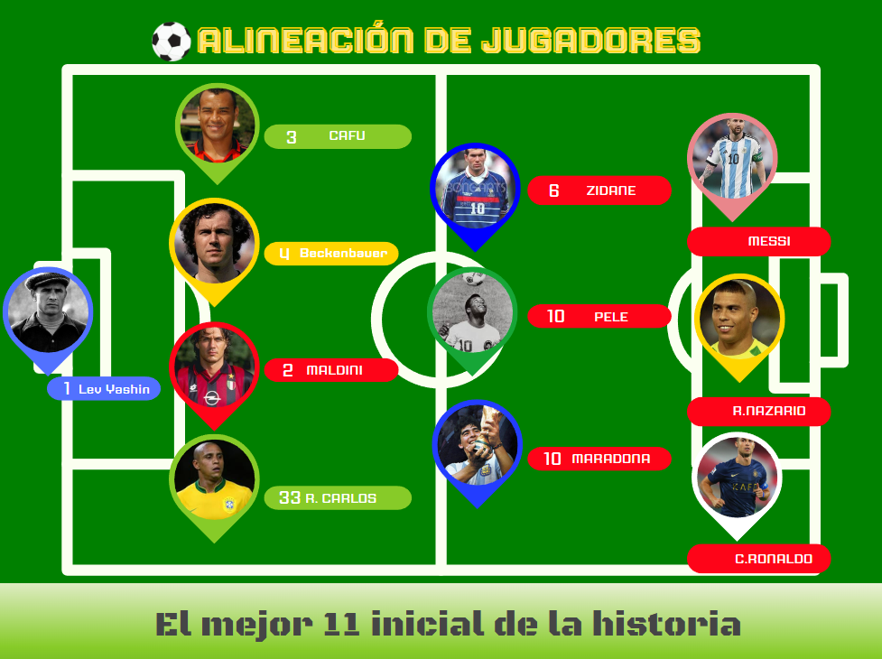

El mejor 11 de la historia del fútbol
Jugadores como Messi, Maradona, Puyol, Casillas y Ronaldinho forman parte del once ideal más legendario de todos los tiempos.
Bienvenido a la Galería de Jugadores
Explora a los más grandes jugadores de la historia del fútbol, desde míticos porteros como Lev Yashin hasta delanteros icónicos como Ronaldo Nazário y Messi.
Nuestra plataforma te guía por las trayectorias, estadísticas y momentos legendarios que definieron el deporte rey.
Haz clic en cualquier categoría del menú para comenzar tu recorrido por el legado del fútbol.
Cada sección ha sido diseñada para que descubras curiosidades, títulos obtenidos, clubes donde brillaron y el impacto que estos cracks dejaron en sus selecciones nacionales.
No importa si eres fanático de los años dorados del fútbol o seguidor de la nueva generación: aquí encontrarás una recopilación visual y narrativa que rinde homenaje a los mejores.